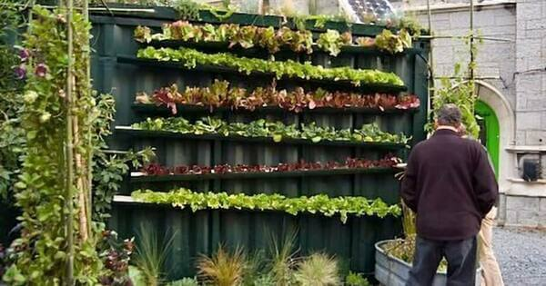

Want to start or expand your hydroponic setup, but don’t have space? Consider vertical
gardening,
a hot trend in the
gardening space. Vertical gardening is growing stacked plants on top of each other. Vertical hydroponic gardens
can fit
into any small space, improve productivity per square foot, and look beautiful. They’re perfect for small
backyards,
patios, porches, and even indoor areas. Learn about vertical gardens, what to do with them and how to start one
below!
The Benefits of Vertical Gardens
Growing upwards can reduce the heating/cooling costs. Since the space taken up by a vertical
garden would normally just
be empty space that needs to be cooled, the vertical garden is basically receiving free cooling/heating.
Stacking plants on top of each other obviously works to maximize yields. Since you are
using more space, a vertical
garden is more space efficient.
Maintaining a vertical hydroponic garden is also easier. Since much of the garden is
above the ground, you don't have to
bend over/kneel down as much to harvest/care for plants.
Vertical gardens tend to look better than normal hydroponic gardens. The layers of
green
plants draw attention away from
the arguably ugly hydroponic system below. Vertical gardens can be used to block views of lesser-looking things
too.
Vertical hydroponic gardens can save even more water than normal hydroponic gardens.
By
stacking them on top of each
other you can use the same reservoir for each level, saving more water and requiring less maintenance.
Best Plants for Vertical Hydroponic Gardens
In general, the best plants for vertical gardens are short, don't need a trellis, and are pretty
hardy. Though, with a
proper setup, any plant can be grown in a vertical hydroponic garden.
Microgreens - Super short, grow fast, yield year-round, nutritious, quick turn around
Lettuce - Compact, easy to care for, universally liked, cheap
Strawberries - tasty, produces yield round, easy to harvest
Lettuce-microgreen strawberry salad
How Does it Work?
As a quick recap, hydroponics is soilless gardening. Plants are grown in a non-soil medium like
Rockwool, expanded clay,
or gravel. Nutrients are delivered via fertilizer solutions. Hydroponic systems circulate the nutrients to the
plants to
provide an effective environment for growth. Hydroponic systems grow plants faster, healthier, and cleaner than
traditional gardening. If you want to know more about how hydroponics works, check out our guide.
There are several ways to build a vertical hydroponic garden. Before exploring specific
methods, lets look at the 2 different types of vertical gardens. In general, vertical hydroponics uses either a
vertical pipe tower or a horizontal pipe
tower arrangement.
A vertical pipe tower uses a long (typically PVC) pipe to grow plants. Plants are grown
in net cups filled with Rockwool
angled 45 degrees into the pipe. The roots of the plant grow into the pipe to suck up nutrients. A tube is
attached to a
nutrient and water reservoir at the base of the tower. A water pump will pump the water from the reservoir to
the
top of
the tower, then the water will trickle down the pipe, watering the plants and providing them with nutrients
before
returning to the reservoir at the base of the tower to be reused.

GreensGrow
A horizontal pipe tower is typically larger scale than a vertical
pipe tower. Horizontal
pipe towers use the nutrient
film technique (NFT) to grow plants. Several horizontal pipes are stacked on top of each other. Plants are grown
in net
cups sitting inside the pipes. The roots, again, grow into the pipe for water and nutrients. Water is pumped
from
the
reservoir to each pipe (each pipe gets its own water line) and flows through the pipe and returns to the
reservoir. In
this system, artificial lights may be installed between pipes to provide extra light to plants, although this
may
not be
necessary.
Vertical Hydroponic Garden Ideas
Verticle Pipe Tower
A really simple vertical pipe tower. This tower is quite rudimentary, which is awesome for a
quick
build. Built out of
PVC and other simple materials, this is the ultimate budget setup for beginners. If you’re looking for a day
project for
your kids or just to get your feet wet, this is it. The tower definitely isn't the most efficient though. The
water
distribution system is not perfect, there’s a lot of space at the bottom for the reservoir, and it’s not the
best-looking vertical hydroponic garden out there. Light shouldn’t be a problem in this system, as plants are
spaced out
well
A – Frame Hydroponic System
Out favorite vertical hydroponic system by far. It is a little more complicated to build, but it
looks beautiful in a
backyard. This system is super space efficient for an at-home system due to the large number of plants in the
small
space. It shouldn’t even require extra light if you angle the frame to track the sun. We don’t recommend this
style of
system for complete beginners, though a little challenge never hurt anyone. The pumping can be quite complicated
to set
up since the water does not flow in the same direction for each pipe, and the water quality can swing quickly
since
there are so many plants relying on one reservoir.
Zig–Zag Hydroponic System
A zig-zag hydroponic system is the simplest horizontal pipe tower. It's our pick for the
best-looking vertical
hydroponic system, especially if you plant colorful plants in the system. The pumping system is easy. Just a
line
from
the reservoir up to the top pipe, the water will meander its way down all the pipes back into the reservoir. You
must be
careful though, if a plant at the top gets a disease, it will give all of the plants downstream the disease.
That's not
a major risk, but it's something to consider.
Garden Wall
This simple vertical hydroponic garden uses the house as the backbone of the system. It’s
cheaper
to build than most
horizontal pipe systems and is compact against the wall. Overall, this is an awesome idea, but it comes with a
major
flaw: light. The house will block a lot of light from reaching the plants. Half the day the plants will be in
the
shade
due to the house. Plants that need full sun for 8 hours a day may struggle to grow well in a setup like this.
Indoor System
This is an awesome indoor system. It does use artificial lights, which is a little expensive,
but
it guarantees full
light for plants on command. It's the most compact system on this list too, with plants directly on top of each
other.
Things to Consider
If you’re ready to try building a vertical hydroponics garden, good! But here's a few things to
consider before getting
started.
Your plants LOVE light. Especially in a hydroponic system where they get over-nurtured.
Outdoors, be sure to arrange
your plants to maximize time in the full sun per day. If absolutely necessary, supplemental light can be used.
Indoors,
It gets a little tricky. If near windows, the plants will get some light, but it may not be enough. Each level
must
receive enough light to promote healthy growth.
This is not a set-and-forget activity. Hydroponics requires time and commitment to
guarantee your plants grow. Plants
need management, you need to track water quality, light input, plant health, and more. Along the way, you’re
going
to
make mistakes, find out new things, and discover better ways to do things.
Things are going to break. Even the perfect setup is going to have issues. Leaks,
cracks,
broken lines, and dead motors
are going to happen from time to time. Broken things are going to hurt your plants, so make an effort to check
on
things
every day.
Hydroponics has a high initial investment. While the production in vertical hydroponic
gardens is high, the cost of the
resources required to manage and grow those plants is great. Most of the cost is a one-time investment: light
panels,
pump, piping, reservoirs, and building materials, so after construction, your hydroponic system should be close
to
pure
profit.
Questions
By no means is this guide complete, but it is a great start. If you’re ready to get started,
consider checking our guide
to at home hydroponics. If you have any questions, drop us an email at hydroponicsathome.us@gmail.com
Conclusion
No hydroponic system is going to be perfect, but vertical systems are close. As long as you keep
in mind the cost and
time commitment necessary for a system, you’re set up for success. The few disadvantages of a vertical
hydroponic
system
are more than made up for with the higher yield and productivity.
Hydroponics is exciting, I can't wait for your journey to start!